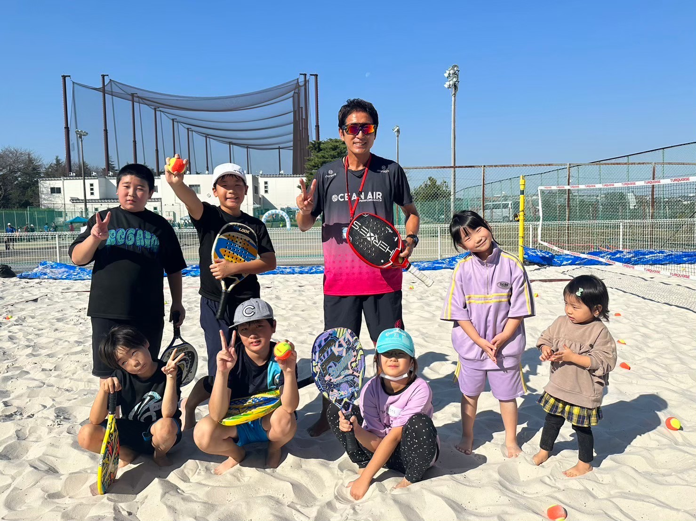

「好き」を仕事に。
テニスの楽しさを、
一緒に地域に届けませんか。
私たちが探しているのは、テニスが好きで、人を笑顔にするのが好きな方。経験や資格よりも、ひとりひとりに寄り添える温かさを大切にしています。
コーチもスタッフも、レッスンや受付だけでなく、大会・イベントやSNSまでみんなで分け合って施設をつくっています。社員・契約・アルバイト、あなたに合ったかたちで一緒に働きませんか。
テニス・ビーチテニスのレッスン指導に加え、受付・コート整備・大会運営・SNSの発信も担当。アルバイトはレッスン時給1,300円〜2,000円、正社員は月給22万円〜30万円。テニス歴5年以上の方。
小田急藤沢テニスガーデンの受付・予約対応、コート整備、大会運営、SNSの発信。時給1,279円〜。
勤務地・勤務時間・待遇などの募集要項と応募フォームは、小田急藤沢テニスガーデンの採用ページにあります。